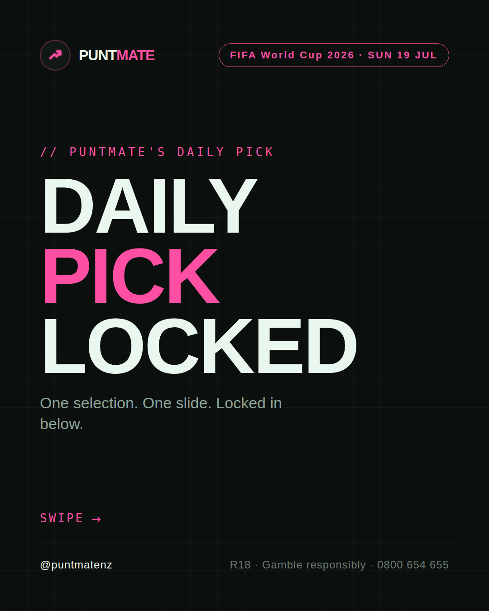
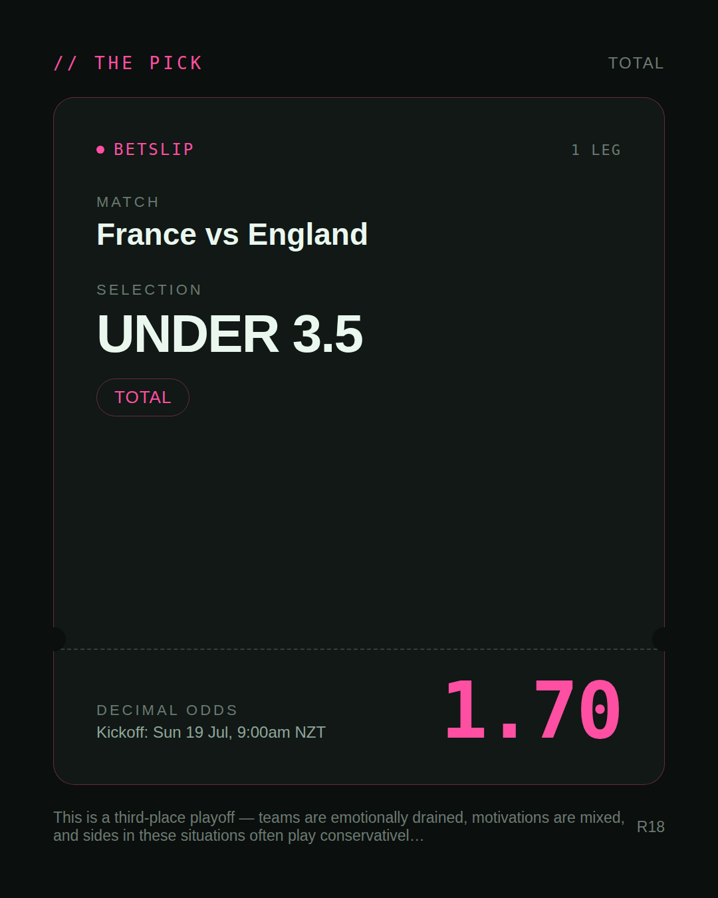
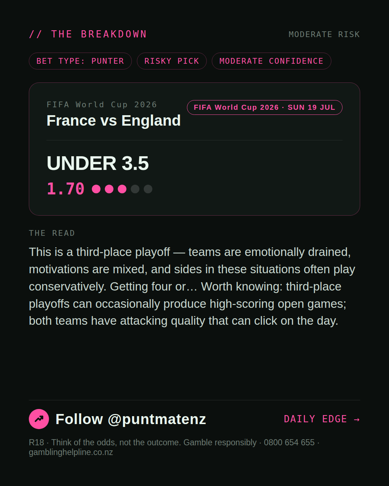
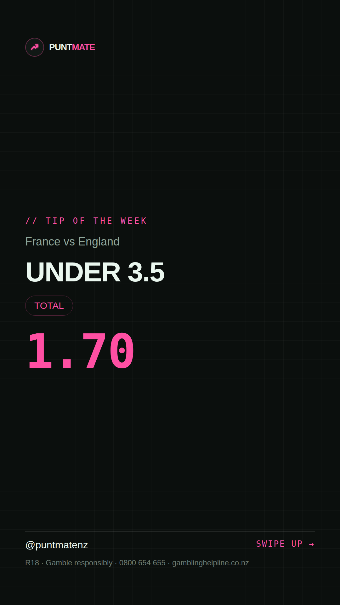

*🎯 PUNTMATE NZ — FIFA World Cup 2026* 🏟 France vs England *PICK:* UNDER 3.5 *ODDS:* 1.70 (Total) *BET TYPE: PUNTER* _This is a third-place playoff — teams are emotionally drained, motivations are mixed, and sides in these situations often play conservatively. Getting four or… Worth knowing: third-place playoffs can occasionally produce high-scoring open games; both teams have attacking quality that can click on the day._ ────────────────── 📲 Join Telegram for daily picks R18 · Gamble responsibly · Problem Gambling Foundation NZ: 0800 664 262
🎯 FIFA World Cup 2026 — France vs England UNDER 3.5 @ 1.70 (Total) BET TYPE: PUNTER Solid touch here. Not a lock, but the value's real and the form backs it up. This is a third-place playoff — teams are emotionally drained, motivations are mixed, and sides in these situations often play conservatively. Getting four or… Follow for daily value picks → @puntmatenz Problem Gambling Foundation NZ: 0800 664 262 #PuntmateNZ #SportsBetting #NZTAB #FIFAWorldCup2026
| has_pick | True |
| pick_id | 2026-07-18_France_vs_England |
| run_id | 29641404884 |
| generated_at | 2026-07-18T10:50:08.537445+00:00 |
| post_date | 2026-07-18 |
| match | France vs England |
| sport | soccer_fifa_world_cup |
| sport_label | FIFA World Cup 2026 |
| market | Total |
| selection | UNDER 3.5 |
| odds | 1.70 |
| bet_type | PUNTER_BET |
| bet_type_label | BET TYPE: PUNTER |
| bet_type_reason | Solid touch here. Not a lock, but the value's real and the form backs it up. This is a third-place playoff — teams are emotionally drained, motivations are mixed, and sides in these situations often play conservatively. Getting four or… |
| classification | RISKY_PICK |
| risk | RISKY_PICK |
| confidence | MODERATE |
| confidence_label | MODERATE |
| final_explanation | This is a third-place playoff — teams are emotionally drained, motivations are mixed, and sides in these situations often play conservatively. Getting four or… Worth knowing: third-place playoffs can occasionally produce high-scoring open games; both teams have attacking quality that can click on the day. |
| public_caution | Keep this one light — the value's there but so is the uncertainty. |
| theme | night |
| carousel_paths | ['data/review/2026-07-18_France_vs_England/cover.png', 'data/review/2026-07-18_France_vs_England/tip.png', 'data/review/2026-07-18_France_vs_England/breakdown.png'] |
| carousel_urls | ['https://raw.githubusercontent.com/kingofthecastle24/puntmate/main/data/cards/2026-07-18_France_vs_England_night_1_cover.png', 'https://raw.githubusercontent.com/kingofthecastle24/puntmate/main/data/cards/2026-07-18_France_vs_England_night_2_tip.png', 'https://raw.githubusercontent.com/kingofthecastle24/puntmate/main/data/cards/2026-07-18_France_vs_England_night_3_breakdown.png'] |
| story_path | data/review/2026-07-18_France_vs_England/story.png |
| story_url | https://raw.githubusercontent.com/kingofthecastle24/puntmate/main/data/cards/2026-07-18_France_vs_England_night_story.png |
| intended_platforms | ['telegram', 'instagram_feed', 'instagram_story', 'facebook'] |
| workflow_state | GENERATED |
| has_multi | True |